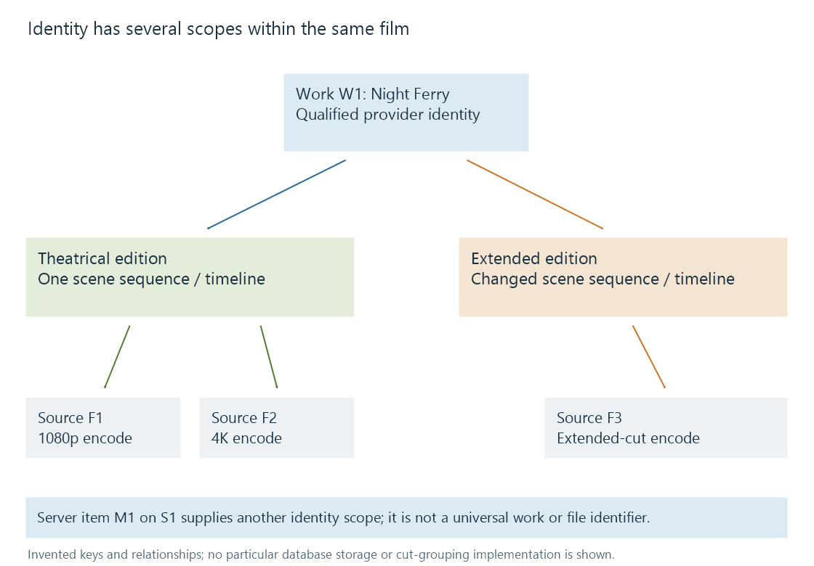

Media item identity
Media item identity distinguishes a catalogue entry, the work or episode it describes, and the particular resources that can play it.
“What is the same movie?” has several answers. Two titles may describe the same work. Two encodes may preserve the same cut. Two paths may lead to identical bytes. Two server entries may nevertheless have separate internal identities.
A useful identity decision begins by stating which of those things should be the same. Without that scope, a duplicate check can collapse an extended edition into a theatrical release, or preserve two accidental copies as if they were different films.
Four identities in one movie library
Consider the fictional film Night Ferry:
| Scope | Example identifier | What it identifies |
|---|---|---|
| Catalogue work | A movie provider's qualified movie ID | The film record in that provider's catalogue |
| Edition | Theatrical or extended cut | A particular editorial version of the work |
| Media resource | Source F1, with its path and stream details | One playable representation of an edition |
| Server item | Item M1 on server S1 | An entry through which this server presents the movie |
The labels M1, S1 and F1 are invented for this explanation. They are not a proposed database layout.

Two encodes of the theatrical cut can share a work identity and edition identity while having different resource identities. The extended cut can share the work identity while differing in content and timeline. A provider that has only one film record may not supply a separate ID for every cut.
In Emby's API, an item has an Id and can expose ProviderIds and MediaSources. The source information has its own Id, Path and technical description. These fields express distinct purposes. The presence of an ID does not promise that it survives every import, deletion, server rebuild or change of storage layout.
A title is a label, not a primary key
A title can change with language, preferred presentation or correction. Two unrelated works can also have the same title and year. Even a title/year pair is matching evidence rather than a universal identifier.
A provider identifier must retain its namespace and entity type. The number 12345 from one provider is not equivalent to 12345 from another. A series ID is not an episode ID, even when an interface presents both as numbers.
The library's own item ID has another scope. It identifies the object used by that server API, not a global catalogue work. Copying an item ID into another independent server is not a dependable way to identify the same film there.
This matters for history transfer. A source-server ID can locate the old record; a qualified provider ID can help locate a candidate on the destination. The transfer still has to account for entity type and edition. A resume point needs an even more precise match because it refers to a particular timeline.
What a fingerprint proves
Different identity checks answer different questions:
| Evidence | Useful conclusion | Remaining uncertainty |
|---|---|---|
| Same path string | The stored locator text agrees | The bytes may have been replaced; the path may resolve differently on another machine |
| Same file size and modification time | A cheap change signature agrees | Different content can share both values |
| Same cryptographic hash over complete files | Extremely strong evidence of byte equality | The files' catalogue meaning still needs interpretation |
| Similar audio/video fingerprint | Portions may contain the same perceptual content | Another cut, excerpt or re-encode may also match |
| Same provider work ID | Both descriptions refer to that provider's work record | Edition, encode and local-item relationships can still differ |
SHA-256, specified in the Secure Hash Standard, hashes a byte sequence. Changing a container tag or artwork attachment can change the complete-file hash without changing the film's pictures and sound. Re-encoding the same cut will ordinarily change it too. A byte comparison is excellent for identifying copied files; it is the wrong test for deciding whether two encodes should be alternate sources of one movie.
Likewise, similarity is useful evidence rather than an automatic merge decision. A trailer contains excerpts from the feature. An audio fingerprint could find shared passages, but that does not make the trailer another full version of the film.
Identity continuity after a change
Suppose F1 moves from Disk A to Disk B. The underlying cut can remain the same while the path changes. A catalogue may update a locator, or may recognize a removed resource and a new resource through other evidence. The resulting item/history behavior depends on its reconciliation rules.
Replacing F1 with a corrected encode introduces another case. The same work and cut may remain, but duration, stream indexes, seek previews or cached analysis may need updating. Replacing it with an extended cut changes the timeline as well: retaining a 70-minute resume value does not preserve the same scene.
For a migration, the meaningful question is therefore more detailed than “Did the title appear?” It is whether the destination preserved the intended work match, source relationships and viewer state at the right scope. Emby's metadata manager discusses how identifying information can affect library behavior; its documentation should guide product-specific correction workflows.
A practical identity test
For two entries, state the intended relationship before looking for matching evidence:
- Same bytes: compare the actual resources, not just the posters.
- Same cut, different encode: compare edition and timeline, then technical differences.
- Same work, different cut: retain the edition distinction even if a provider ID agrees.
- Related work or supplement: express that relationship instead of treating it as sameness.
See Also
- Provider identifiers
- Media identification
- Movie editions and cuts
- Alternate media versions
- Duplicate library entries
- User-specific playback history